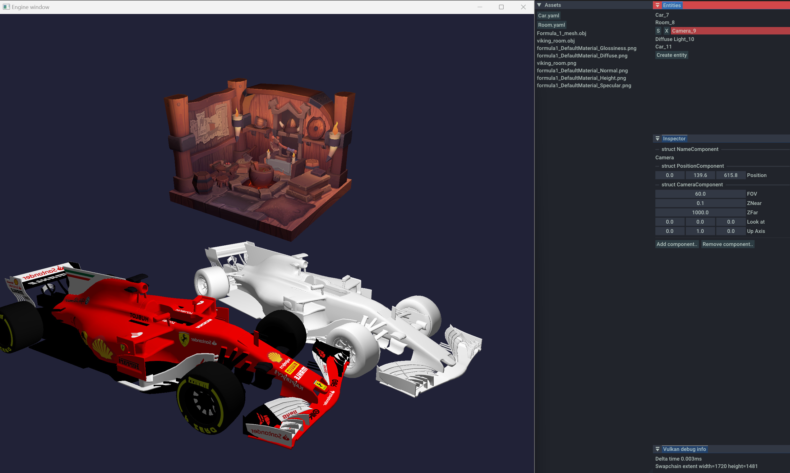

Software engineer with 8 years of experience
● Solid experience with C#
● Have experience with C++ (RAII, STL, Dear Imgui, Entt, Premake)
● Solid experience with Unity3d (3d, 2d, physics, ui, addressables, editor, profilers, services etc)
● Have understanding of graphics rendering pipeline, concepts of Vulkan, OpenGL and GLSL
● Have knowledge of game architecture, design patterns, solid, kiss, dry
● Deep knowledge of algorithms and data structures, algorithms complexity
● Experienced in performance profiling and optimization (cpu, gpu, ram etc)
● Familiar with 3d math, linear algebra
Simple engine written in C++ with a Vulkan renderer that I developed in my spare time to improve my skills and test different kind of ways of development. The engine uses ECS (EnTT library) in core to make game systems testable and be able to run them in parallel. The engine have simple editor with an ability to serialize and deserialize entities and components, add and remove components in runtime. Vulkan rendering is developed from scratch.
View on GitHub 